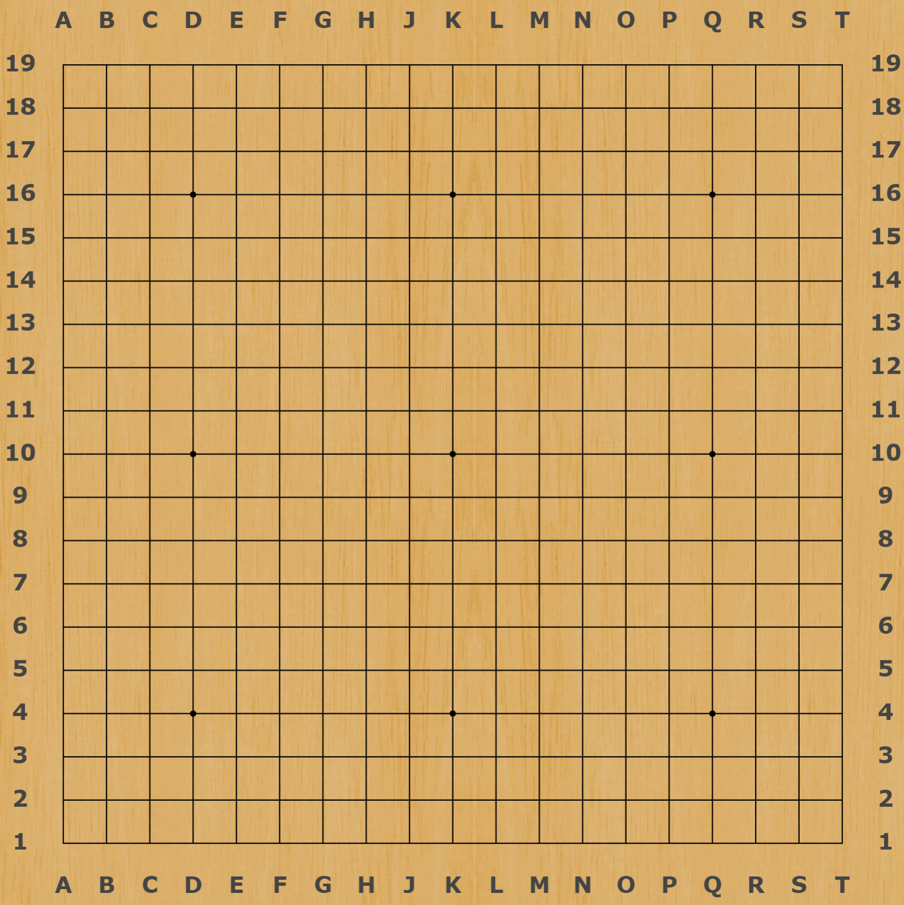

Welcome to Gomoku!
Play as Black
Play as White

Rules:
Gomoku is a game about creating lines. In order to win, one must create a line which is 5 counters or greater in length. This can be in any direction, be it horizontal, vertical or diagonal.